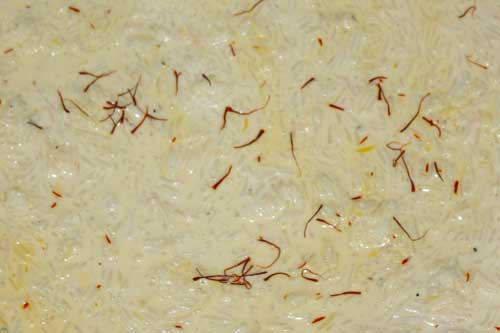

"When I don’t feel like eating, this takes care of me."
Ingredients
Steps & Emotions
- Take rice - nothing wasted
- Add milk - softness begins
- Mix slowly - calmness
- Add sugar - gentle sweetness
- Heat lightly - warmth grows
- Stir - steady rhythm
- Add malai for extra richness - comfort appears
- Eat slowly - feel cared
Time: 10 mins | Difficulty: Easy